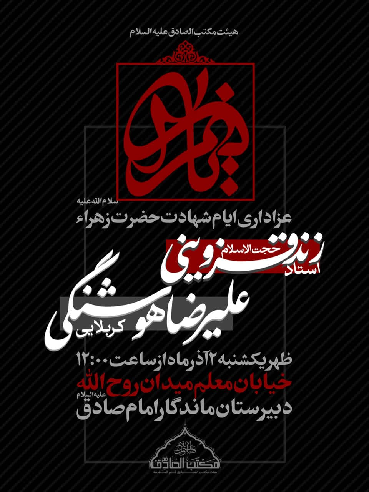

هویت و مأموریت هیئت
هیئت مذهبی فرهنگی مکتب الصادق در سال ۱۳۶۰ با هدف نشر معارف اهل بیت (علیهم السلام) و زنده نگه داشتن یاد و نام شهدا تأسیس شد. این هیئت با بیش از چهار دهه فعالیت مستمر، همواره تلاش کرده است تا محفلی امن و معنوی برای دوستداران اهل بیت فراهم آورد.
رسالت ما
ایجاد فضایی معنوی برای رشد ایمانی جوانان، ترویج فرهنگ عاشورایی، و خدمت به جامعه در چارچوب تعالیم اسلامی.
ارزشهای ما
- پایبندی به اصول و معارف دینی
- احترام به سلیقههای مذهبی متفاوت
- توجه ویژه به نسل جوان
- خدمت به جامعه محلی
